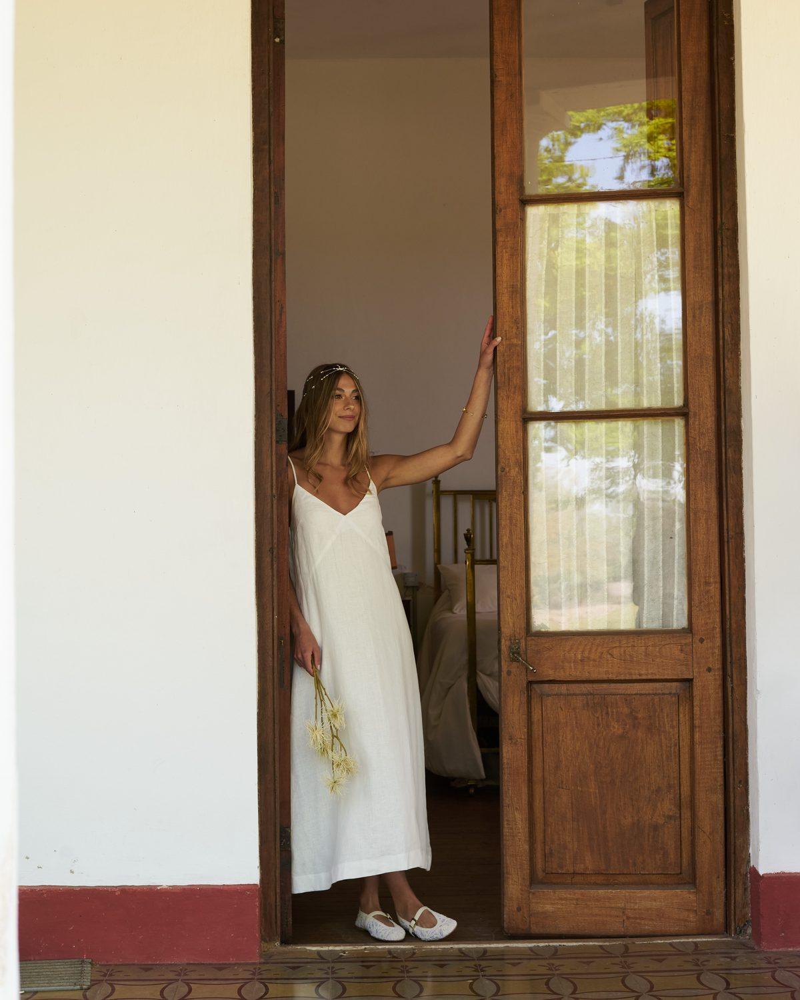

Novias · Madrinas · Invitadas
Piezas a medida
Tu pieza a medida, hecha artesanalmente y pensada para tu evento especial. Diseño propio, trabajo de taller y materiales nobles, en cada detalle.

Colección Luz
1 / 15
Cómo trabajamos
En tres pasos
Respondemos de lunes a viernes de 10 a 16.
(01)
Nos escribís y nos contás tu fecha y qué estás buscando.
(02)
Te mandamos cómo trabajamos, con opciones, tiempos y valores.
(03)
Elegís tu pieza y la hacemos para vos.
Novias reales
Inspiración para tu día
Algunas de las novias que llevaron DLK. Si te gusta lo que lleva alguna, consultanos por esas piezas.


Contanos tu fecha y qué imaginás. Lo demás lo vemos juntas.
Consultar por WhatsApp